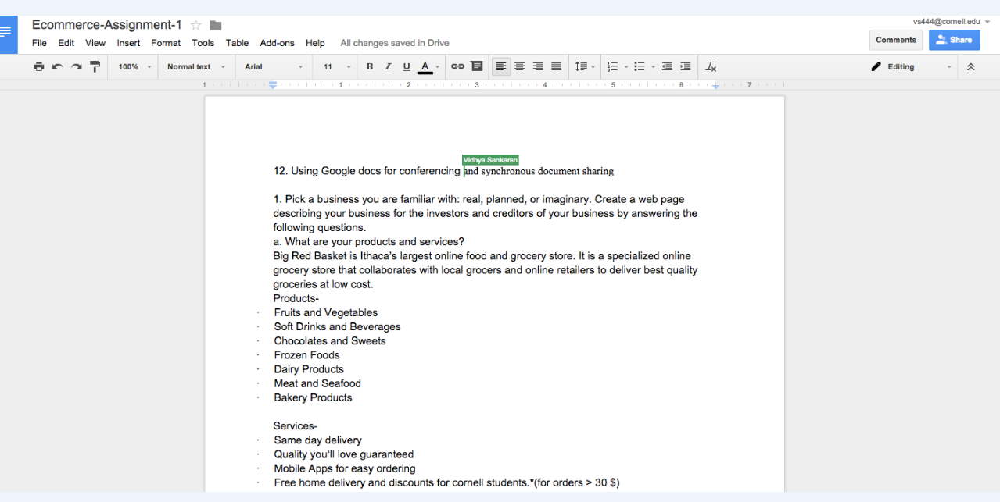
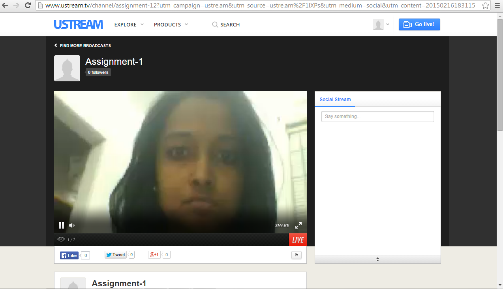

Question 1
1.a Products and Services
Big Red Basket is Ithaca’s largest online food and grocery store. It is a specialized online grocery store that collaborates with local grocers and online retailers to deliver best quality groceries at low cost.
| Products | Services |
|---|---|
| Fruits and vegetables | Same day delivery |
| Soft drinks and beverages | Quality you'll love, guaranteed |
| Chocolates and sweets | Mobile app for easy ordering |
| Frozen foods | Free delivery and other perks for CU students |
| Dairy | We accept VISA, Master Card , Amex and Cornell Card |
| Meat and seafood | Cash on Delivery |
| Baked goods | Save a list, and we'll tell you when you're running out. |
1.b Our revenue sources
Big Red Basket makes its money by taking a small percentage of the sale price of each item that is sold through its website. It also allows local grocers to advertise their products by paying to be listed as featured products.
Question 2
2.a and 2.b Big Red Basket vs Rosieapp
Big Red Basket’s main competitor is RosieApp.com. It is also an online grocery store that enables customers to order groceries at low price from local grocers and online retailers. Some of the competitive advantage Big red Basket has over Rosie’s include.
- Special discounts for Cornell students.
- Accepts cornell card for payments.
- Can predict low inventories and recommend items. Template grocery lists available from which users can add/remove items.
- Free home delivery while Rosie charges $4 as delivery charge.
- Same day delivery guaranteed while Rosie ‘s takes 1-2 days.
2.c
Question 4
Visit our forum
Question 5
Join us in a chat!
Question 6
Follow this link
Question 7
Follow this link
Question 8
Sending a message to mit.edu. The path followed is shown in the below screenshot. Slowest nodes-107.14.19.34 and 66.109.8.189 with RTT>=55ms

Question 11
Follow this link
Question 12
Describe the ease of use of the system, and the problems you experienced. Can you see multiple mouse pointers on the shared document and are they all active simultaneously, or do you have to take turns? Explain.
Yes multiple users can edit the document simultaneously and it is very easy and convenient to use. We can see multiple text pointers on the document with the Name of the user editing it and this helps with better coordination when editing the document simultaneously.
The major problem I faced with google doc is when I use the offline editing feature for editing- ie when I am not connected to the internet and I make changes to the same paragraph the other user has also done, then syncing up with the master document becomes an issue.
Another issue is it doesnot show the ownership details - we cannot know who edited a particular paragraph.
Need to add hangout screenshot
Question 13
Our stream could be seen here, it is not live at the moment.
Screenshot captured from Browser-
Screenshot from software-